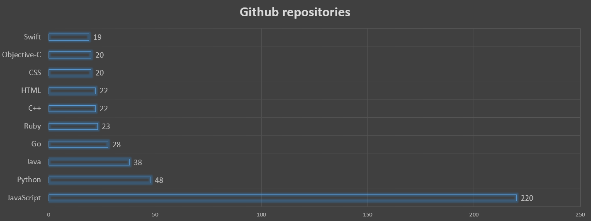
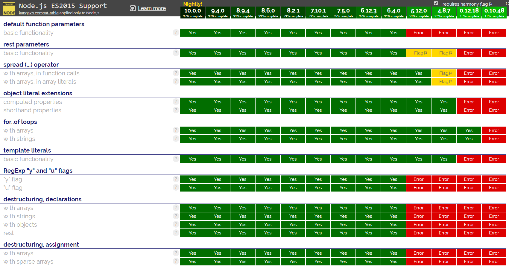

workshop
What's node.js?
- JavaScript runtime built on Chrome's V8 JS engine
- Compliant to ecma-262 specification
- Event-driven, non-blocking IO model
- Javascript you've been using for years minus browser-specific APIs
- REPL
Node.js vs browser
| Node.js | Browser | |
| Renders window | Headless | Window |
| Global scope variable | global | window |
document variable |
No | Yes |
| External modules | Via require() object |
Asynchronous file loading |
| DOM API | No | Yes |
Why node.js?
- No language-switching when developing full stack
- Code can run in backend and frontend
Big open-source community
Query: stars:">10000"
All repositories: 650
ES6 compliance
http://node.green NPM as package manager
Initialize:npm initnpm install --save module-name{
"name": "training",
"version": "1.0.0",
"main": "index.js",
"scripts": {
"start": "node build/app.js"
},
"dependencies": {
"express": "^4.16.2"
},
"devDependencies": {
"babel-core": "^6.24.1"
}
}Built-in packages
File system
Allows for synchronous and asynchronous file and directory reading.Stream
Transmits chunks of binary data using Buffers.
Stream types:
- Readable streams
- Writable streams
- Duplex streams
Buffer
Mechanism to read and manipulate streams of binary streams like TCP or file system data
Array-like structure
Character encoding
HTTP
HTTP server for node.js
Process
Gives information and control over current Node.js process
Useful API
- process.abort
- process.argv
- process.env
Babel
Using stage-0 to stage-3 features
Typescript
Configure compiler via tsconfig.json file
Developing backend applications
Express.js
- Minimalist framework for node.js routing
- Parsing requests
- Engine templating
Express session
- Session management
- Lots of connectors to session stores
Database connectors
Function that can run on frontend and backend
Example stack
- Express.js
- Express-session
- Passport
- node-postgres
- Typeorm